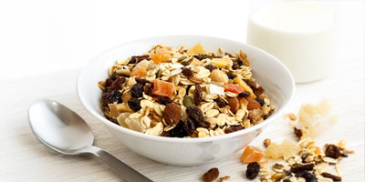

Fruit and Nut Bowl
A light mix of fresh fruit and gentle nuts that gives you quick energy without feeling heavy. Simple, refreshing and perfect for mid-day cravings.
Light, simple, and comforting bites for any moment of the day. These snacks keep you satisfied while staying gentle on your stomach.
Explore snack recipes
The right snack can refresh your energy, improve your focus, and keep you feeling steady
between meals.
These gentle options are made to give you a boost without upsetting your digestion.
Whether you're craving something crunchy, creamy, or naturally sweet, SafeBites helps you find snacks that work with your body. Enjoy small bites that feel good and taste even better.
Filter the recipes by the diet of your preference:
A light mix of fresh fruit and gentle nuts that gives you quick energy without feeling heavy. Simple, refreshing and perfect for mid-day cravings.
Crunchy, refreshing vegetables paired with a gentle dip. A great option when you want something clean and satisfying between meals.
A simple and gentle snack with natural sweetness. Light, easy to digest and ideal for busy days when you need a quick, calm boost.